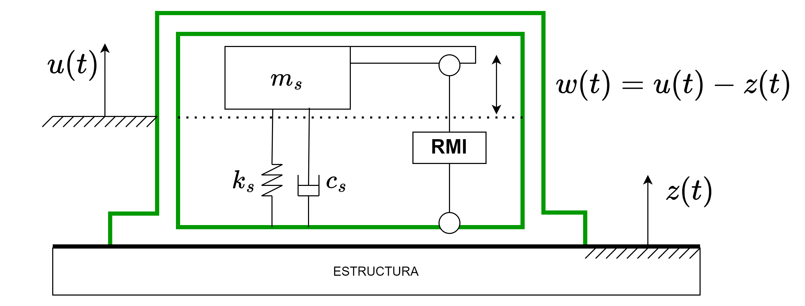

Referencia: de Silva (2000, Cap. 11)

El output que genera el sensor es una señal eléctrica (voltaje, corriente) que es proporcional a \(w(t)\).
Sobre la utilidad de un sensor, fijarse en el rango de frecuencia y en el rango de aceleraciones.
Ej.: Sensor con rangos de frecuencia \([5; 10000]\) Hz y de amplitud \([-10; 10]\) g no podría medir frecuencias de \(1\) [Hz], y dependiendo de la resolución, probablemente no detecta microvibraciones, por ejemplo \(1\) mg = \(\frac {1}{1000}\) g.
Supongamos tenemos un sensor que se modela como un oscilador SDOF sin amortiguamiento:
\begin{align*} \ddot {w} + \omega_s^2 w = -\ddot {z} \end{align*}
La FRF de este oscilador es: \begin{align*} H_{WZ}(\Omega ) = \frac {1}{1-\frac {\omega_s}{\Omega }^2}\\ H_{W\ddot {Z}}(\Omega ) = \frac {1}{\Omega^2 - \omega_s^2} \end{align*}
Generalmente la respuesta transiente de \(w(t)\) (que contiene información del sensor) decae rápido
Relación deformación vs voltaje
Es la propiedad de algunos materiales o dispositivos para almacenar carga eléctrica cuando se les aplica una diferencia de potencial.
Del griego piezo (apretar/presión). Es la propiedad de algunos materiales que, al ser sometidos a tensiones o deformaciones, generan diferencias de potencial y cargas eléctricas. De manera inversa, si se les aplica una diferencia de potencial, estos materiales se deforman.
Ejemplos de materiales piezoelétricos: Sal de Rochell, Tourmalina, cristales de cuarzo.
sensitividad: Cantidad de voltaje que se genera por unidad de medida de vibración (ej: de aceleración).
\begin{align*} S = \frac {\text {output (voltaje)}}{\text {input (vibración)}} \end{align*}
Resolución: Cantidad mínima de input para generar algún voltaje (se relacióna con el ruido/contaminación de la señal).
Rango de Frecuencias: Rango de frecuencias que el sensor es capaz de medir. Si la respuesta que quiero medir
contiene una frecuencia fuera de este rango, no se estaría midiendo la respuesta real de la estructura.
Linealidad: Que tan lineal es la respuesta que estoy midiendo con la señal eléctrica.
\begin{align*} \text {medición} = C \times (\text {señal}) \end{align*}
Generalmente, los sensores tienen \(R^2 \approx 0.99\)
En ingeniería estructural y mecánica, los sensores permiten medir variables físicas como aceleración, desplazamiento, fuerza o deformación. La correcta selección del sensor depende de la magnitud de interés, el rango de operación, la frecuencia de muestreo requerida y la robustez necesaria para el ambiente de trabajo.
Estos sensores generan un voltaje proporcional a la aceleración aplicada al sensor. Funcionan generalmente con un elemento sensible resistivo (como un puente de Wheatstone) acoplado a una masa interna que se desplaza frente a la aceleración. Tienen la ventaja de ser simples, económicos y de fácil acondicionamiento de señal, pero suelen tener limitaciones de frecuencia y son sensibles al ruido eléctrico.
Estos sensores utilizan la variación de capacitancia provocada por el movimiento de una masa interna. La señal de salida se obtiene mediante técnicas de modulación, generalmente cambiando la frecuencia de un puente capacitivo (capacitive bridge). Se caracterizan por su alta sensibilidad a bajas frecuencias, bajo consumo de energía y bajo costo. Sin embargo, son frágiles frente a impactos fuertes y su rango dinámico es limitado.
Estos sensores emplean cristales piezoeléctricos que generan carga eléctrica proporcional a la fuerza inercial aplicada. A diferencia de los acelerómetros resistivos o capacitivos, los piezoeléctricos son muy robustos frente a altas frecuencias y choques, lo que los hace ideales para aplicaciones dinámicas. Existen configuraciones de compresión, flexión y corte, cada una con distinta sensibilidad a vibraciones y ruidos ambientales.
Las galgas extensiométricas (strain gages) miden la deformación de un material a través de la variación de resistencia eléctrica de un filamento conductor.
Al adherirlas a un elemento estructural, permiten medir su deformación y, a partir de ésta, estimar esfuerzos o fuerzas aplicadas.
Se utilizan ampliamente en pruebas de laboratorio y monitoreo estructural.
Las celdas de carga son transductores que convierten fuerzas en señales eléctricas, generalmente usando strain gages en configuración de puente de Wheatstone. Se emplean en balanzas, bancos de pruebas y sistemas de monitoreo de cargas estructurales.
Estos sensores miden movimiento o desplazamiento lineal/rotacional. Entre los más comunes están:
Existen tecnologías avanzadas que permiten medir movimiento, vibración o rotación en aplicaciones especializadas: